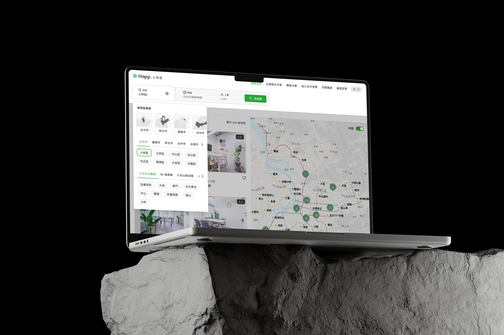
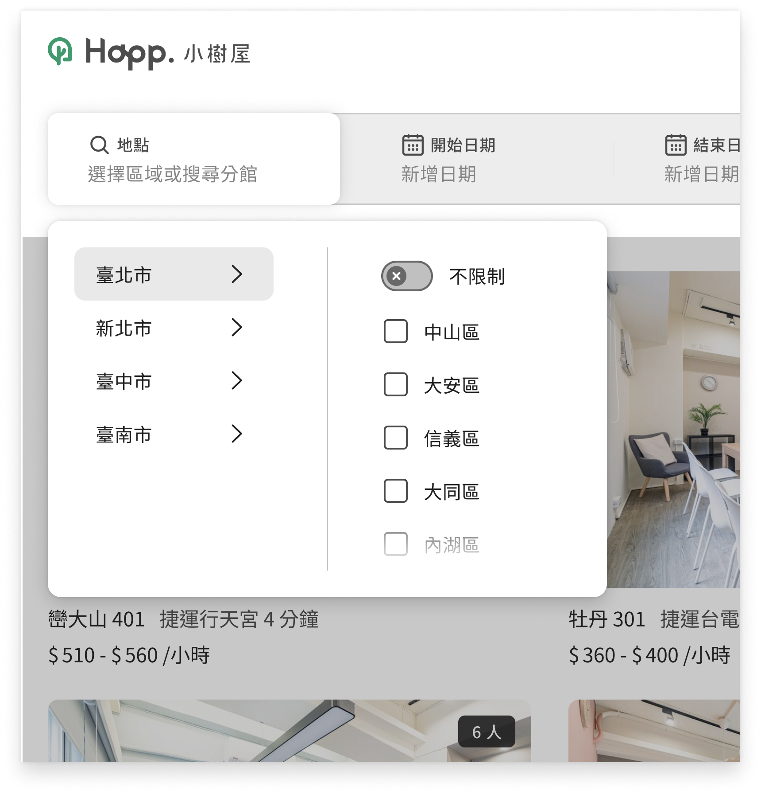
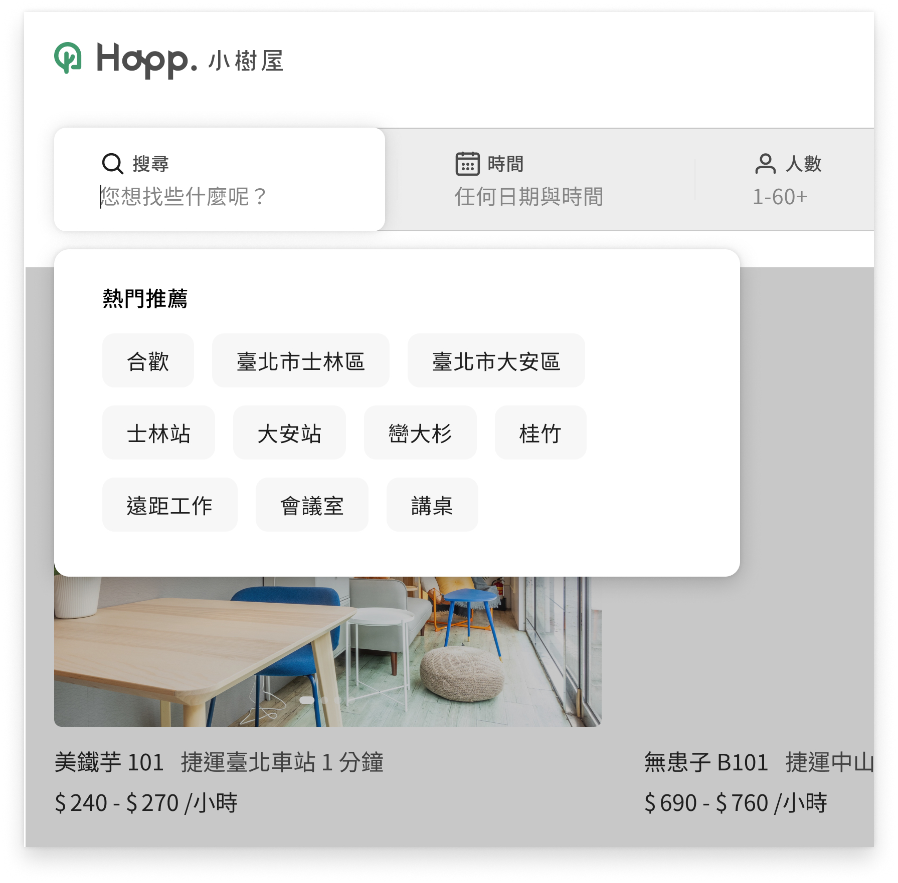
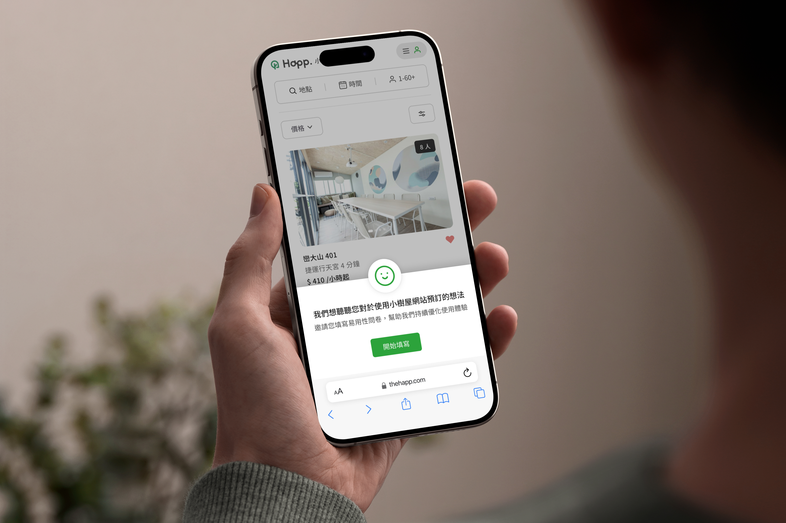
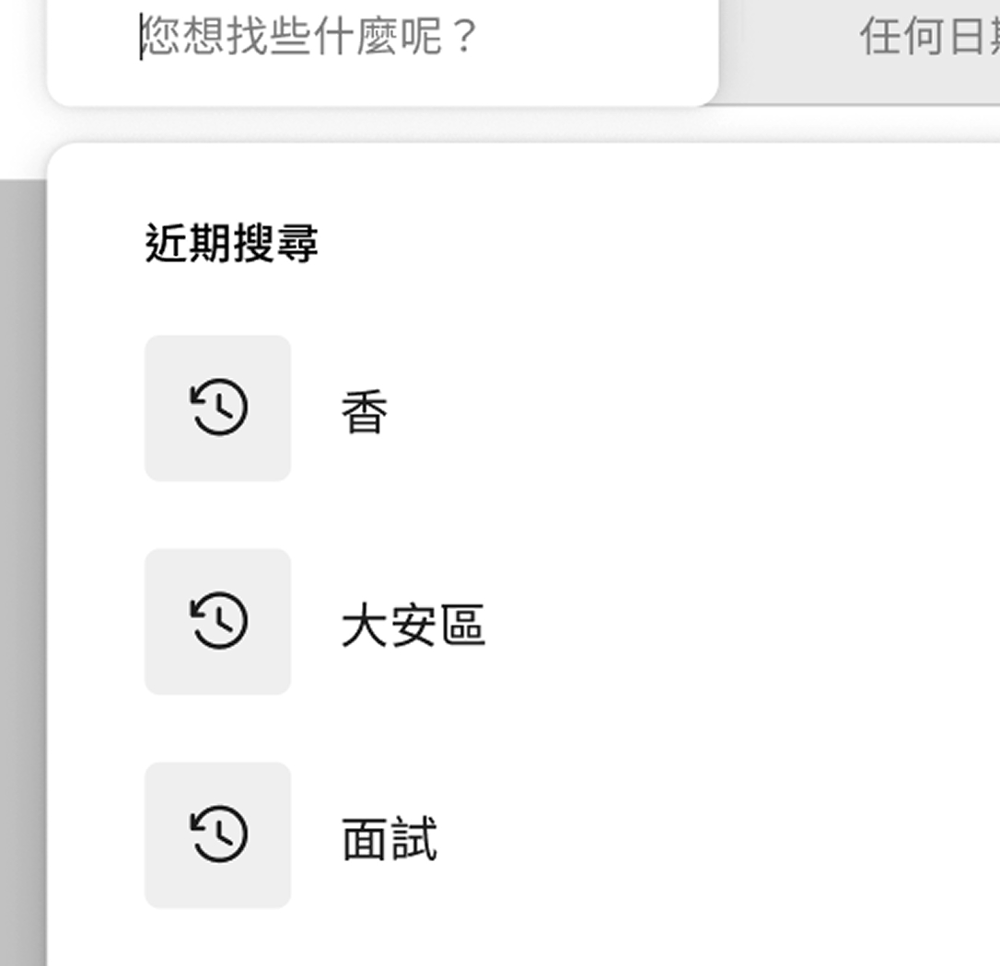
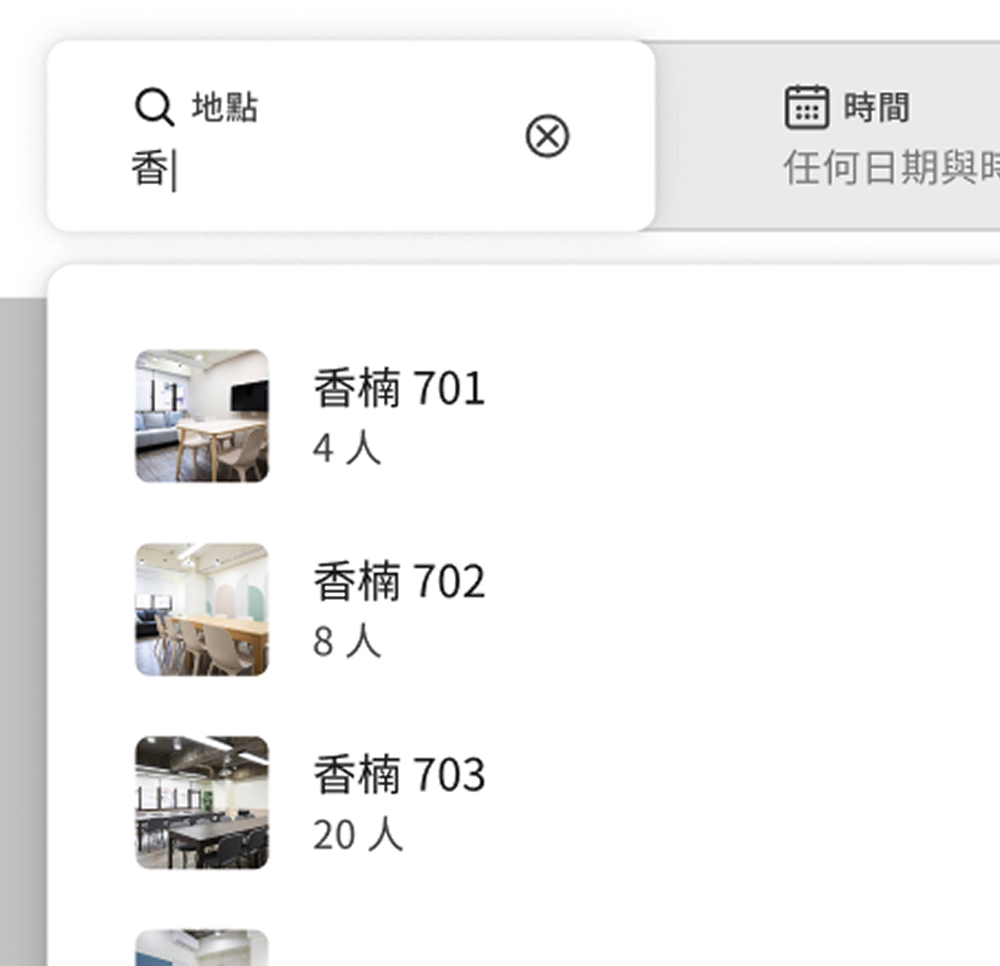
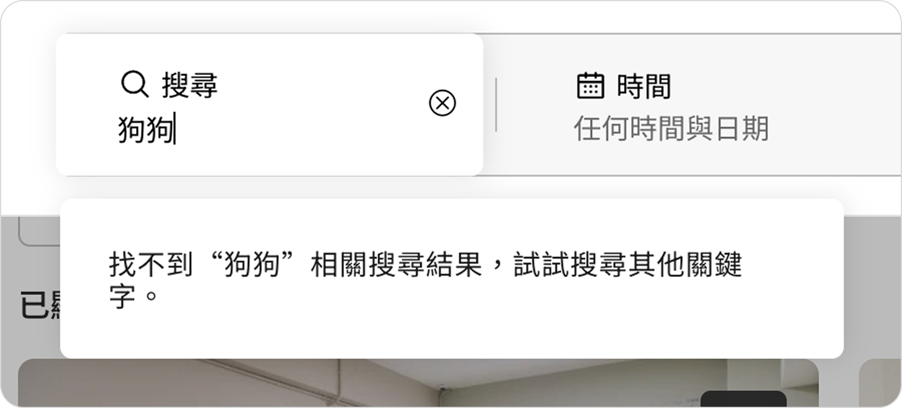

主要擔任角色
UXUI
負責範圍
流程與介面設計、A/B 測試
合作的團隊角色
產品經理*1、前端工程師*1
執行時間
2025/4 - 2025/6
( 2 個月 )

痛點問題
影響用戶找尋空間的體驗
原本網站上只提供了選擇城市行政區、搜尋指定空間功能，導致使用者時常找不到空間，需要透過地圖來觀看捷運線確認。

搜尋架構功能
缺少提供使用者過往搜尋紀錄
搜尋關鍵詞時，沒有推薦相對應的項目
當使用者搜尋錯誤時沒有提供指引幫助
對於高頻用戶地區台北市，未提供該地區其他選項
商業目標
透過 A/B Testing 驗證結果
推動線上搜尋優化、提升用戶體驗
我們為期 30 日將網站 SEO 的標籤放入搜尋功能中，藉此來試驗只留下標籤的設計是否可行，以及將原有的城市行政區選項一並進行測試，來驗證兩者之間的差異性
城市行政區設計
城市功能點擊顯示子功能行政區
使用者可以點擊全選該城市的行政區
使用者可以自由切換不同城市

SEO 標籤設計
推薦不同主題的標籤，如設備、捷運、家俱等
使用者可以直接點擊標籤顯示主題空間
使用者可以透過搜尋功能來找任何需求
A/B 測試結果
根據數據結果結合設計推動目標
經過兩個版本測試，用戶的明顯反饋是『城市區域』很重要，但也發現到 SEO 標籤的大部份點擊類別都是『台北捷運』居多，因此嘗試將原本的設計容納入標籤，來提供給用戶。
0%
城市與行政區點擊率
0%
SEO 標籤點擊率
設計挑戰
如何將兩個需求情境結合成一個設計
改善易用性體驗，在 十項使用者體驗設計優化原則 中，第一則是『明確顯示系統狀態』藉由合理時間和適當回饋，系統應該讓使用者知道現在的狀態是什麼。
第七則是『提供使用時的自由度和效率』產品應該提供自由度來滿足進階和沒有經驗的使用者，提供沒經驗的使用者預定的功能和提供進階使用者所需要的操作。

優化項目 1
加強城市視覺版位
如何在一時間告訴使用者，這個選項是最重要也是第一時間需要選擇的資訊，需要把原本的文字調整成視覺板塊的呈現，再結合台灣地圖的設計，讓畫面有重點不會視覺疲勞。
- UI：視覺化的板塊
- 易用性－連結現實中的認知：台灣地圖的插圖呈現
- 無障礙設計：可點擊操作、可理解的設計
優化項目 2
複雜的資訊結構化的整合
依據重要優先順序排列，城市 > 行政區 > 其他，將次要的選項設計成模組化，使用者要選擇自己所在的區域時，就會看到預設的基本模組，並以 Tab + Chip 的 UI 結合，讓使用能對主要的城市切換不同選項，呈現不同的行政區
- Tab
- Chip
- 一致性、模組化
優化項目 3
提供高頻用戶的選項
我們先前透過 SEO 標籤的點擊使用率來看，台北捷運的選項點擊最高，加上小樹屋的用戶佔比最多為『台北市』而用戶最常反映希望以台北捷運為錨點，習慣以捷運來找空間，因此將『只有在捷運線上小樹屋』提供使用的選擇，以免使用者點擊之後沒有如實呈現
- 台北市用戶最常錨定的目標
- 只提供有空間的選項
優化項目 4
符合人機介面規範的設計
搜尋功能需要包含幾項原則，當使用者在進行搜尋時，能輕鬆地使用產品功能，大幅減少使用者阻礙

保留使用者過往搜尋紀錄

搜尋關鍵詞時，推薦相對應的項目

搜尋不正確時，顯示錯誤資訊”